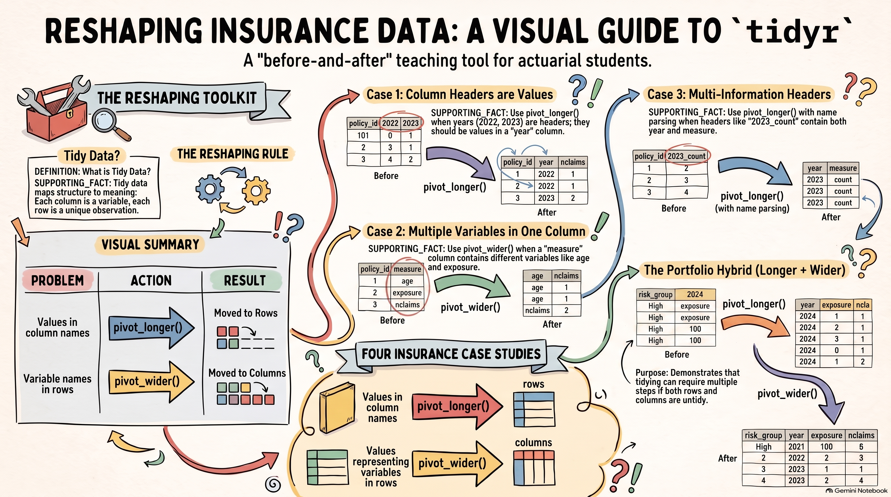

By the end of this chapter, students should be able to:
Explain the three principles of tidy data and identify common forms of untidy data.
Distinguish between identifier variables and variables that need to be reshaped.
Use pivot_longer() and pivot_wider() to transform untidy insurance data into a tidy format.
Explain how tidy data facilitates data transformation and summarization using dplyr.
4.1 Tidy Data
Before transforming or summarizing data, it is important to consider how the data are organized. Tidy data provides a consistent structure that makes data easier to inspect, transform, summarize, and analyse.
A dataset is tidy when its structure follows three principles:
Each variable is a column. A variable represents an attribute being measured, such as age, exposure, claim count, or premium.
Each observation is a row. An observation represents one unit being studied, such as a policy, policyholder, or claim.
Each value is a cell. Each cell contains one value for one variable and one observation.
For example, a dataset of motor insurance policies might be organized as follows:
policy_id
age
exposure
nclaims
amount
1
35
1.0
0
0
2
42
0.8
1
12500
3
29
1.0
2
8400
Here, age, exposure, nclaims, and amount are variables, while each row represents one policy. Each cell contains a single value.
Tidy data is particularly useful when working with R because many data manipulation functions are designed around this structure. For example, with dplyr:
select() works with variables represented as columns;
filter() works with values within observations;
mutate() creates or transforms variables;
group_by() defines groups of observations; and
summarise() calculates summaries of variables within those groups.
When data are not organized in this way, the analysis may still be possible, but additional steps are often needed to reshape the data first. The tidyr package provides tools for doing this. In the next sections, we will examine common forms of untidy data and learn how to reshape them into a structure that is easier to work with using dplyr.
4.2 Common Forms of Untidy Data
Untidy data can arise in several ways. The issue is not simply whether data are stored in a wide or long format. A dataset is untidy when its structure does not clearly represent the variables and observations it contains.
The following examples use small synthetic insurance datasets stored in the project’s data/ folder. Each example illustrates a different structural problem.

Guide to Reshaping Insurance Data
4.2.1 Column Headers Are Values
The file tidyr_01_claims_by_year.csv records the number of claims for each policy across several years.
The main variables are:
Variable
Description
policy_id
Unique identifier for the insurance policy
risk_group
Risk classification of the policyholder
2022–2026
Number of claims recorded in each year
The data have a structure such as:
policy_id risk_group 2022 2023 2024 2025 2026
1001 Young 1 0 2 1 0
1002 Standard 0 1 0 0 1
1003 Young 2 1 1 0 2
The problem is that 2022, 2023, …, 2026 are not really different variables. They are values of the same variable, year.
The underlying variables are:
policy_id
risk_group
year
nclaims
The tidy structure would therefore be:
policy_id risk_group year nclaims
1001 Young 2022 1
1001 Young 2023 0
1001 Young 2024 2
...
The key question to ask is:
Are the column names actually variable names, or are they values of a variable?
Here, the years are values, so the yearly columns need to be reshaped into rows. This is the type of problem addressed by pivot_longer().
4.2.2 Multiple Variables Stored in One Column
The file tidyr_02_policy_measures.csv records several characteristics of each policy. However, the name of the characteristic is stored as a value in the measure column.
The variables are:
Variable
Description
policy_id
Unique identifier for the insurance policy
risk_group
Risk classification of the policyholder
measure
Type of measurement being recorded
value
Value of the corresponding measurement
The data have a structure such as:
policy_id risk_group measure value
1001 Young age 25
1001 Young exposure 1
1001 Young nclaims 2
1002 Standard age 45
1002 Standard exposure 1
1002 Standard nclaims 0
Here, age, exposure, and nclaims are not merely categories of a variable called measure. They represent different variables that should become separate columns.
The tidy structure would be:
policy_id risk_group age exposure nclaims
1001 Young 25 1.0 2
1002 Standard 45 1.0 0
The key question is:
Are values in a column actually the names of different variables?
If so, the values in that column may need to become column names. This is the type of problem addressed by pivot_wider().
This example is also important because it shows that pivot_wider() can be used to make data tidy. Tidy data are not necessarily produced by making data longer.
4.2.3 Multiple Variables Stored in Column Names
The file tidyr_03_claims_year_measure.csv contains claims information for several years and measures.
The dataset includes columns such as:
policy_id risk_group vehicle_type 2023_count 2023_amount 2024_count 2024_amount ...
1001 Young Car 0 0 0 0 ...
The main variables are:
Variable
Description
policy_id
Unique identifier for the insurance policy
risk_group
Risk classification of the policyholder
vehicle_type
Type of vehicle insured
2023_count, 2024_count, …
Number of claims in each year
2023_amount, 2024_amount, …
Total claim amount in each year
The problem is that a column name such as 2023_count contains two pieces of information:
2023_count
│ │
│ └── measure
└─────── year
Thus, the column names contain values for two variables:
year
measure
The tidy structure would separate these pieces of information:
policy_id risk_group vehicle_type year measure value
1001 Young Car 2023 count 0
1001 Young Car 2023 amount 0
1001 Young Car 2024 count 0
1001 Young Car 2024 amount 0
The key question is:
Does a column name contain more than one piece of information?
If it does, those pieces may represent separate variables that need to be extracted from the column names.
For example, 2023_count contains both a year and a measure. pivot_longer() can move the column names into rows, while names_to can separate the different pieces into variables.
The important idea is that pivot_longer() can create multiple variables from column names. When column names contain several pieces of information, names_to can be used to separate those pieces into different variables.
After reshaping, measure is a legitimate variable. It does not need to be converted into separate columns simply because its values are count and amount.
This leads to an important principle:
Tidy data do not require one row per policy.
For this dataset, an observation can be identified by the combination of:
Do not reshape data simply to obtain one row per policy. First determine what an observation represents.
4.2.4 Variables Stored in Both Rows and Columns
The file tidyr_04_portfolio_summary.csv combines two of the structural problems seen above.
The data have a structure such as:
risk_group measure 2024 2025 2026
Young exposure ... ... ...
Young nclaims ... ... ...
Young premium ... ... ...
Standard exposure ... ... ...
Standard nclaims ... ... ...
Standard premium ... ... ...
The main variables are:
Variable
Description
risk_group
Risk classification of the policyholder group
measure
Type of portfolio measure
2024–2026
Year for which the measure is reported
exposure
Total exposure for the risk group and year
nclaims
Number of claims for the risk group and year
premium
Premium for the risk group and year
There are two structural problems.
First, measure contains values such as exposure, nclaims, and premium. These values represent different variables.
Second, 2024, 2025, and 2026 are column names but represent values of the variable year.
The tidy structure should therefore be:
risk_group year exposure nclaims premium
Young 2024 ... ... ...
Young 2025 ... ... ...
Young 2026 ... ... ...
Standard 2024 ... ... ...
The key question is:
Are there structural problems in both the rows and the columns?
Here, both directions need to be considered:
the year values need to move from columns into rows;
the measure values need to move from rows into columns.
Consequently, tidying this dataset requires a combination of pivot_longer() and pivot_wider().
This is the most complex of the four examples because it demonstrates that tidying is not determined by a single reshaping operation. The appropriate sequence depends on the structure of the original data.
4.2.5 Recognising the Structure Before Reshaping
The four examples illustrate a common way of thinking about untidy data. Before deciding which function to use, first identify what the data are trying to represent.
For each dataset, ask:
What is an observation?
Which variables describe or identify that observation?
Which values have been placed in column names or in inappropriate rows?
What should the tidy variables be?
Which reshaping operation would put those variables in the correct places?
For the insurance examples, policy_id identifies an individual policy, while variables such as risk_group and vehicle_type describe that policy. In an aggregated portfolio dataset, a combination such as risk_group and year may identify an observation.
The reasoning process can be summarised as:
\[
\boxed{
\text{Identify the observation}
\;\rightarrow\;
\text{Identify the variables}
\;\rightarrow\;
\text{Identify the structural problem}
\;\rightarrow\;
\text{Choose the appropriate } \mathrm{pivot\_*()}
}
\]
The goal is therefore not simply to make data long or wide. The goal is to make the rows and columns correspond to the observations and variables represented by the data.
The complete R workflows for these four datasets are developed in Working with the Sample Insurance Data, where the datasets are reshaped and then used with the dplyr operations introduced earlier.
4.3 Introducing tidyr
The tidyr package provides tools for reshaping data so that its structure better reflects the variables and observations it contains. In practice, this is particularly useful when data have been recorded in a form that is convenient for data entry or presentation but does not follow the principles of tidy data.
The two functions used most often for reshaping data are pivot_longer() and pivot_wider().
4.3.1 From Wide to Long with pivot_longer()
pivot_longer() makes a dataset longer by turning selected columns into rows.
data |> tidyr::pivot_wider(names_from = ...,values_from = ... )
The main arguments are:
Argument
Purpose
names_from
Column containing the values that will become new column names
values_from
Column containing the values that will fill the new columns
For example:
data |> tidyr::pivot_wider(names_from = measure,values_from = value )
Here, the values in measure become column names, and the corresponding values in value fill those columns.
4.3.3 Choosing the Appropriate Function
The choice between the two functions depends on where the variables are currently stored.
If values representing a variable have been stored in column names, pivot_longer() is usually appropriate:
\[
\text{Values in column names}
\rightarrow
\text{pivot\_longer()}
\]
If values representing variables have been stored in rows, pivot_wider() may be appropriate:
\[
\text{Variable names stored as values in rows}
\rightarrow
\text{pivot\_wider()}
\]
In some datasets, both problems occur at the same time. The fourth insurance dataset demonstrates how pivot_longer() and pivot_wider() can be combined.
ImportantLong and Wide Do Not Define Tidy Data
The terms long and wide describe the shape of a dataset. They do not, by themselves, determine whether the data are tidy.
A wide dataset can be tidy, and a long dataset can be untidy.
The goal of tidyr is not simply to make data longer or wider. The goal is to reshape the data so that each variable is a column, each observation is a row, and each value is a cell.
In the next section, these ideas are applied to the four synthetic insurance datasets. The examples show how to identify the columns that should remain unchanged and how to select the appropriate pivot_*() operation for each structure.
4.4 Working with the Sample Insurance Data
The four synthetic datasets introduced earlier are stored in the project’s data/ folder. We now use them to practise the reshaping operations introduced above.
The purpose of this section is not to introduce new types of untidy data. Instead, it is to apply the same reasoning to actual data:
inspect the data;
identify the observation;
identify the variables that should remain unchanged;
identify the columns that need to be reshaped;
apply the appropriate pivot_*() function; and
check the resulting tidy structure.
TipA useful habit
Before writing a pivot_*() command, do not start with the function. First ask:
What does one row represent in the data I want to obtain?
Once the intended observation is clear, it becomes much easier to decide which columns should remain and which information needs to be reshaped.
# A tibble: 100 × 9
policy_id risk_group vehicle_type exposure `2022` `2023` `2024` `2025` `2026`
<dbl> <chr> <chr> <dbl> <dbl> <dbl> <dbl> <dbl> <dbl>
1 1001 Young Car 0.83 0 0 0 0 0
2 1002 Young Car 0.81 0 0 1 0 0
3 1003 Older SUV 0.87 0 0 0 0 0
4 1004 Older SUV 0.58 0 0 0 0 0
5 1005 Middle Pickup 0.67 1 0 0 1 0
6 1006 Middle Car 0.58 0 0 0 0 0
7 1007 Young Pickup 0.92 0 0 1 0 0
8 1008 Young SUV 0.87 0 0 0 0 0
9 1009 Middle SUV 0.63 0 0 0 0 0
10 1010 Older Pickup 0.64 0 0 0 0 0
# ℹ 90 more rows
The yearly claim counts are stored in separate columns. We want one observation for each policy and year.
The columns policy_id and risk_group describe the policy and therefore remain unchanged. The columns containing years are reshaped using pivot_longer().
# A tibble: 500 × 6
policy_id risk_group vehicle_type exposure year nclaims
<dbl> <chr> <chr> <dbl> <chr> <dbl>
1 1001 Young Car 0.83 2022 0
2 1001 Young Car 0.83 2023 0
3 1001 Young Car 0.83 2024 0
4 1001 Young Car 0.83 2025 0
5 1001 Young Car 0.83 2026 0
6 1002 Young Car 0.81 2022 0
7 1002 Young Car 0.81 2023 0
8 1002 Young Car 0.81 2024 1
9 1002 Young Car 0.81 2025 0
10 1002 Young Car 0.81 2026 0
# ℹ 490 more rows
The year variable is initially read as character because the original column names are text. If we want year to be numeric, we can convert it explicitly:
The important point is that pivot_longer() has not performed an analysis. It has put the data into a structure in which the analysis is straightforward.
# A tibble: 400 × 5
policy_id risk_group vehicle_type measure value
<dbl> <chr> <chr> <chr> <dbl>
1 1001 Young Car age 19
2 1001 Young Car exposure 0.95
3 1001 Young Car nclaims 1
4 1001 Young Car premium 11875
5 1002 Young Car age 19
6 1002 Young Car exposure 0.98
7 1002 Young Car nclaims 0
8 1002 Young Car premium 12250
9 1003 Older SUV age 72
10 1003 Older SUV exposure 0.98
# ℹ 390 more rows
Here, measure contains values such as age, exposure, and nclaims. These values represent different variables.
The intended observation is one policy, so we want one row per policy_id. The values in measure should become column names.
Code
policy_measures_tidy <- policy_measures |> tidyr::pivot_wider(names_from = measure,values_from = value )policy_measures_tidy
# A tibble: 100 × 7
policy_id risk_group vehicle_type age exposure nclaims premium
<dbl> <chr> <chr> <dbl> <dbl> <dbl> <dbl>
1 1001 Young Car 19 0.95 1 11875
2 1002 Young Car 19 0.98 0 12250
3 1003 Older SUV 72 0.98 0 8820
4 1004 Older SUV 61 0.74 0 6660
5 1005 Middle Pickup 37 0.8 0 8000
6 1006 Middle Car 31 0.97 0 9700
7 1007 Young Pickup 27 0.76 0 9500
8 1008 Young SUV 20 0.6 0 7500
9 1009 Middle SUV 35 0.82 0 8200
10 1010 Older Pickup 72 0.71 0 6390
# ℹ 90 more rows
We can now use the variables directly in dplyr. For example, calculate the total number of claims by risk group:
This example demonstrates why the direction of reshaping cannot be chosen simply by looking at whether the data appear long or wide. We first identify what the variables are and what one row should represent.
# A tibble: 800 × 6
policy_id risk_group vehicle_type year measure value
<dbl> <chr> <chr> <chr> <chr> <dbl>
1 1001 Young Car 2023 count 0
2 1001 Young Car 2023 amount 0
3 1001 Young Car 2024 count 0
4 1001 Young Car 2024 amount 0
5 1001 Young Car 2025 count 0
6 1001 Young Car 2025 amount 0
7 1001 Young Car 2026 count 0
8 1001 Young Car 2026 amount 0
9 1002 Young Car 2023 count 1
10 1002 Young Car 2023 amount 47486
# ℹ 790 more rows
This dataset contains both structural problems encountered earlier:
the years are stored in column names; and
measure contains values representing different variables.
The intended observation is one risk group and year. We therefore need to reshape the years into rows and then turn the measures into separate columns.
Here, tidyr has prepared the structure, while dplyr performs the transformation.
ImportantReshaping Is About Structure
The four examples use different reshaping operations, but the reasoning is the same:
\[
\text{Identify the observation}
\rightarrow;
\text{Identify the variables}
\rightarrow;
\text{Reshape the data}
\rightarrow;
\text{Check the tidy structure}
\]
Only after the data have the appropriate structure should we proceed with transformations, summaries, or analysis.
The four datasets therefore illustrate a progression from a single reshaping problem to a combination of reshaping operations:
Dataset
Structural problem
Reshaping
tidyr_01_claims_by_year.csv
Years stored in column names
pivot_longer()
tidyr_02_policy_measures.csv
Variables stored as values
pivot_wider()
tidyr_03_claims_year_measure.csv
Multiple pieces of information in column names
pivot_longer() with names_to and names_sep
tidyr_04_portfolio_summary.csv
Problems in both rows and columns
pivot_longer() + pivot_wider()
The resulting tidy datasets can now be handled using the dplyr verbs introduced earlier in the chapter.
4.5 From Tidy Data to dplyr
Tidying data is usually not the final goal. Once the data have been reshaped into a tidy structure, we can use the dplyr functions introduced earlier to transform, summarise, and analyse the data.
For example, after tidying the portfolio data, we can calculate claim frequency by risk group and year: